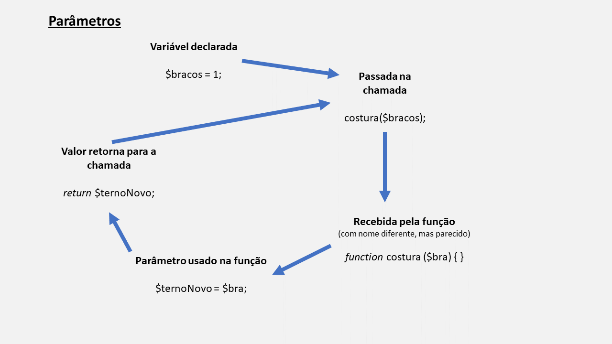

PHP
Normalmente é necessário fazer um código em que algumas linhas serão repetidas várias vezes (o que significa que essas linhas são iguais). Para que não seja necessário ficar copiando e colando ou muito menos digitando tudo novamente, podemos usar Funções.
Mas o que são Funções? Elas são pedaços de código que ficam em um lugar específico, mas que podem ser chamadas quantas vezes e em quantos lugares precisar. Quando a chamada é feita, não é necessário digitar tudo de novo porque é como se todas aquelas linhas fossem transportadas só pela chamada. Vamos à prática com a estrutura básica de uma função em PHP:
function nome (parâmetros) {
// Aqui dentro é onde vão todas as linhas que precisariamos repetir
}
Obs: lembrando que // em PHP indica comentário!
- A palavra function é obrigatória e fixa. É ela que indica que será criada uma função alí.
- Onde está escrito nome é onde se coloca o nome da função, que pode ser qual nós quisermos (contanto que não tenha espaços, por exemplo: nomeDaFuncao é válido, enquanto nome da funcao não é). Também existem funções anônimas (sem um nome), mas isso só é usado em casos únicos e não serão necessárias por enquanto.
- Os parênteses logo depois do nome são obrigatórios e servem para indicar se tem parâmetros ou não. Os parâmetros em si não são obrigatórios e vamos falar mais para frente.
- Logo depois dos parênteses vêm { e } (as chaves) e dentro delas é colocado todo o código que se quer repetir.
- A chamada é feita só repetindo o nome da função (que deve estar exatamente igual) seguido dos parênteses (com ou sem os parâmetros):
nome(parâmetros);
function nome (parâmetros) {
// Aqui dentro é onde vão todas as linhas que precisariamos repetir
}
Agora vamos fazer uma analogia. Imagine que você trabalha em uma empresa e que todas as pessoas que trabalham alí precisem de um cartão próprio para entrar no prédio. O cartão de todo mundo funciona de forma parecida. Ele é eletrônico e quando aproximado da catraca, é lido e a pessoa é autorizada a entrar. Para que existisse algum tipo de controle de entradas caso não existisse o cartão, seria preciso fazer um registro para cada uma das pessoas todas as vezes que entrassem no edifício, o que não é nada prático e só atrapalharia todo mundo. Mas para que não seja necessária essa repetição, o cartão foi feito de uma forma igual para todo mundo e a autenticação é feita de uma forma simples (o próprio cartão).
Aplicando isso à ideia de uma função:
function autenticacao(){
// Quando for aproximado da catraca, a passagem é liberada;
}
O processo de autenticação (a utilidade do cartão) é um processo repetido por todas as pessoas que entram no prédio. Para não precisar ser criado um novo registro todas as vezes, os cartões tem a function autenticacao() dentro de si.
Mas como sabemos, não basta só o cartão ter a função dentro dele, as pessoas também precisam encostá-lo na catraca, ou seja, fazer a chamada da função junto à catraca. A representação em código da chamada seria essa:
autenticacao();
E é exatamente por meio da chamada que todo o processo da function autenticacao() é repetido sem precisar repetir as linhas dentro dela todas as vezes.
A mesma coisa é um código. Se precisamos autenticar um usuário no login, não faria sentido repetir as linhas que fazem isso a cada usuário, é só fazer a chamada da função que o processo (ou rotina) é "transportado" e cada usuário entra de forma simples.
Return
Quando usamos uma função é porque queremos algum tipo de resultado sem precisar repetir a mesma parte de código, porém as funções não conseguem saber exatamente qual o valor desse resultado; ainda mais pensando que não existe limite para usar dados dentro de uma função e, mesmo que só exista um, é necessário deixar claro o que deve ser retornado. É exatamente essa a função do return. Como o nome diz, ele serve para retornar algo. Mas o quê? Como já dito, uma variável ou um simples valor. Ainda no caso do cartão de autenticação, fazemos isso (só adicionando um IF/ELSE):
function autenticacao(){
$pessoa = "registrada";
if ($pessoa == "registrada"){
$liberada = true;
} else {
$liberada = false;
}
return $liberada;
}
Nesse exemplo foi declarada a variável $liberada para confirmar se a pessoa poderá entrar ou não. Portanto se a pessoa estiver registrada no sistema, $liberada recebe o valor true (verdadeiro) e ela pode entrar; se não estiver registrada, a variável recebe o valor false, o que impede a entrada. Mas como já disse, por mais que só tenha uma variável, a função não sabe sozinha o que fazer, por isso é usado o comando return $liberada para deixar claro que será retornado o valor dentro da variável $liberada, seja ele true ou false.
Também poderia ser um valor sem uma variável (por exemplo: só dizer return true ou return false):
function autenticacao(){
$pessoa = "registrada";
if ($pessoa == "registrada"){
return true;
} else {
return false;
}
}
Diria, inclusive, que essa última solução é melhor, já que é uma função simples e deixa o código menor, além de não criar uma outra variável sem necessidade.
Um porém é que return não deve ser usado de qualquer jeito, já que a função é parada quando o código chega nele:
function autenticacao(){
$pessoa = "registrada";
if ($pessoa == "registrada"){
return true;
} else {
return false;
}
echo "Fim da função!";
}
O funcionamento dessa função parece claro: passando pelo IF/ELSE, o código verifica se a pessoa está registrada ou não, o resultado é retornado e, por fim, é escrita na tela a frase Fim da função! utilizando um echo. Correto? É óbvio que se estivesse eu não teria perguntado, né... A verificação com IF/ELSE ocorre normalmente, como já vimos anteriormente. Porém o echo "Fim da função!" simplesmente não acontecesse, porque ou a pessoa está registrada e é retornado true e ela passa, ou ela não está registrada e é retornado false. Independente da ocorrência, o return sempre é usado antes do echo, e como return encerra a função, tudo o que estiver depois dele na rotina é simplesmente ignorado. Por isso tenha cuidado na hora de retornar!
Parâmetros
Imagine uma pessoa que vai a uma loja de roupas comprar um terno. Existem peças com as medidas já prontas, porém pode ser preferível que seja feito outro conjunto sob medida, já que as pessoas possuem corpos diferentes. Para fazer esse conjunto, o alfaiate precisa pegar as medidas do corpo da cliente usando uma fita métrica. Com ela, o alfaiate consegue as medidas dos braços, torço, ombros, cintura e das outras partes do corpo, ou seja, ele pega todos os parâmetros necessários para fazer o terno novo. Parâmetros são isso: valores (nesse caso as medidas do corpo) que serão usados como base para outra coisa (o terno novo). Tranformando isso em uma função com parâmetros (que vão dentro dos parênteses no início da declaração de função e separados por vírgula):
function costura ($bra, $tor, $tor, $cin){
// código
}
Não sei o limite de parâmetros que uma função pode receber em PHP, mas não é necessário se preocupar com isso; pode não haver nenhum ou até mesmo muitos parâmetros ao mesmo tempo.
Assim como sem o return a função não sabe sozinha o que mandar de volta, ela também não sabe magicamente a que se referem esses parâmetros. Para isso, as variáveis que queremos passar vão dentro da chamada:
// variáveis
$bracos = 1;
$torço = 0,7;
$ombros = 0,5;
$cintura = 0,4;
// chamada
costura($bracos, $torço, $ombros, $cintura);
// função
function costura ($bra, $tor, $omb, $cin){
$ternoNovo = $bra + $tor + $omb + $cin;
return $ternoNovo;
}
Os parâmetros não vêm do nada, eles recebem variáveis que guardam um valor que você quer usar dentro da função. Essa passagem é feita na ordem, então meu primeiro parâmetro em costura($bracos, $torço, $ombros, $cintura), sempre corresponde ao primeiro em function costura ($bra, $tor, $omb, $cin), assim como o segundo na chamada corresponde ao segundo na declaração de função e assim por diante. Sei como é confuso isso de passagem de valor entre variáveis e parâmetros e talvez essa imagem ajude:
Repare que usei o nome inteiro nas variáveis (ex: $bracos), enquanto os parâmetros que recebem aquele valor tem uma versão encurtada, isso porque eles não podem ter o mesmo nome. Então se declarei um parâmetro $media, não posso ter outro na mesma função chamado $media; ou se declarei uma variável $media, não posso ter um parâmetro $media (pode até funcionar em certos casos, mas é bom não causar confusão para quem vai ler o código depois). Também não é obrigatório ser o nome encurtado, pode ser o que quiser, só é importante fazer sentido.
Escopo de parâmetros
Outro detalhe importante é que os parâmetros só funcionam dentro da função à qual eles fazem parte. Então quando é declarado:
function costura ($bra, $tor){
// código
}
Os parâmetros $bra e $tor só funcionam dentro da função costura(). Se for declarada outra:
function entrega (){
// código
}
Não será possível usar $bra e $tor novamente porque o escopo (alcance) dos parâmetros é só aquela função, então parâmetros possuem escopo local ou escopo de bloco (diferente de escopo global, que funciona no código todo).
Isso garante que a memória do computador não seja ocupada sem necessidade e o código fica mais organizado, já que $bra e $tor funcionam somente dentro de costura(), significando que eles não existem no resto do código e ainda podem ser "redeclarados" para outras funções tipo entrega(), sem dar erro por usar o mesmo nome:
function costura ($bra, $tor){
// código
}
function entrega ($bra, $tor){
// código
}
Só não pode esquecer de enviar os parâmetros na chamada de entrega() também:
entrega($bracos, $torco);
Vamos a um exemplo mais completo com o que vimos:
1. Temos três alunos e cada um tem duas notas da escola:
// aluno 1
$nota1 = 10;
$nota2 = 8;
// aluno 2
$nota3 = 8;
$nota4 = 8;
// aluno 3
$nota5 = 5;
$nota6 = 9;
2. É preciso fazer o cálculo da média de todos esses alunos. Uma forma de fazer isso é:
$media1 = $nota1 + $nota2;
$media2 = $nota3 + $nota4;
$media3 = $nota5 + $nota6;
3. Para mostrar isso:
echo "Média aluno 1:" . $media1 . "<br>";
echo "Média aluno 2:" . $media2 . "<br>";
echo "Média aluno 3:" . $media3 . "<br>";
Obs: lembrando que <br> é a forma de pular uma linha em HTML para que o conteúdo não fica colado. E sim, estamos usando PHP, mas mostrando os resutados em uma página no navegador, por isso podemos usar elementos HTML de vez em quando.
Mas isso não é nada prático e cria variáveis sem necessidade (o que enche a memória do computador). Uma forma mais profissional de fazer a mesma coisa é com uma função:
1. Vamos manter as variáveis:
// aluno 1
$nota1 = 10;
$nota2 = 8;
// aluno 2
$nota3 = 8;
$nota4 = 8;
// aluno 3
$nota5 = 5;
$nota6 = 9;
2. E no lugar de criar uma variável para cada média, é possível criar apenas uma função que recebe as notas de cada aluno, faz o cálculo e retorna o valor:
function media ($n1, $n2) {
return ($n1 + $n2) / 2;
}
3. E para mostrar, basta chamar a função e passar os parâmetros no lugar das variáveis de média:
echo "Média aluno 1:" . media($nota1, $nota2) . "<br>";
echo "Média aluno 2:" . media($nota3, $nota4) . "<br>";
echo "Média aluno 3:" . media($nota5, $nota6) . "<br>";
4. Comparando os códigos:
// pior
// aluno 1
$nota1 = 10;
$nota2 = 8;
// aluno 2
$nota3 = 8;
$nota4 = 8;
// aluno 3
$nota5 = 5;
$nota6 = 9;
// média
$media1 = $nota1 + $nota2;
$media2 = $nota3 + $nota4;
$media3 = $nota5 + $nota6;
// mostrar
echo "Média aluno 1:" . $media1 . "<br>";
echo "Média aluno 2:" . $media2 . "<br>";
echo "Média aluno 3:" . $media3 . "<br>";
// melhor
// aluno 1
$nota1 = 10;
$nota2 = 8;
// aluno 2
$nota3 = 8;
$nota4 = 8;
// aluno 3
$nota5 = 5;
$nota6 = 9;
// média
function media ($n1, $n2) {
return ($n1 + $n2) / 2;
}
// mostrar
echo "Média aluno 1:" . media($nota1, $nota2) . "<br>";
echo "Média aluno 2:" . media($nota3, $nota4) . "<br>";
echo "Média aluno 3:" . media($nota5, $nota6) . "<br>";
Uma função também pode ser declarada como valor de uma variável por meio da chamada:
$num1 = 5;
$num2 = 7;
$resultado = soma($num1, $num2);
function soma ($n1, $n2) {
return $n1 + $n2;
}
Fazendo isso, a variável $resultado pode ser usada no lugar da chamada, o que facilita já que não é necessário digitar os parâmetros novamente em outros lugares do código.